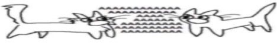

AKSARA

aksa ! any pronouns ! legal age
IXTP ! ind/eng ! seventeen and
detective conan dedicated life!
MUSIC INTREST
Japanese based, Korean based, Alternative Pop, Instrumental Prog, Blues, Progressive Rock, Arena Rock, Post-Grunge, Nu Metal, Heavy Metal, Indonesian Indie, R&B, Alternative/Indie, Mainstream Pop, Indie rock, K/J/I/W-R&B songs, Indonesian EVEN MORE indie, other Indonesian music based, random music.
INTERESTS
webtoon, manga, manhwa, manhua
anime, donghua
jdrama, kdrama
other series, other movies
novel
GAMES
roblox, minecraft, hoyoverse games, rhythm games, game simulator, honorable mentions, and lainnya.
About Me
I enjoy simple talks, light humor, and sharing good vibes. Always open for genuine conversations and new perspectives.
Easy-going and curious. I appreciate honesty, calm spaces, and people who bring positive energy.
#ABOUUTTTMEEEEE!!!!! I'm a person who likes YAPPING and writing XD. I always enjoy it when someone tells me about or recommends something that wasn’t originally my interest—or something I didn’t know before. It could be about anything: music, films, any genres, knowledges, or even about you and your thoughts.
I don’t like it when someone underestimates the person they’re talking to. I admit, sometimes I speak without a filter. Sometimes I can be stubborn, sometimes ignorant. But I always think about the feelings of the person I’m talking to EVEEENNN though I'm gonna be honest .... I sometimes forget. :"
I’m interested in things related to music, any knowledges, languages, and entertainment (comics or manga, movies, etc). At least, in my opinion, there is nothing I truly hate (except the people in the gov—)
A person who enjoys noticing people’s personalities, not anything weird. I’m a bit of a jamet ... and honestly I like using pacman :v especially this one ;V.
I don’t like complaining about people, because aAATT LEAST FOR ME, everyone just has their own different traits.
#Highlight Test Paragraph Test